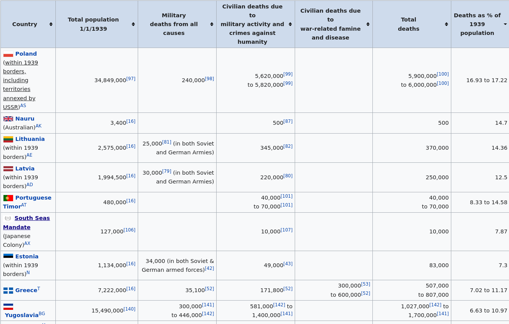
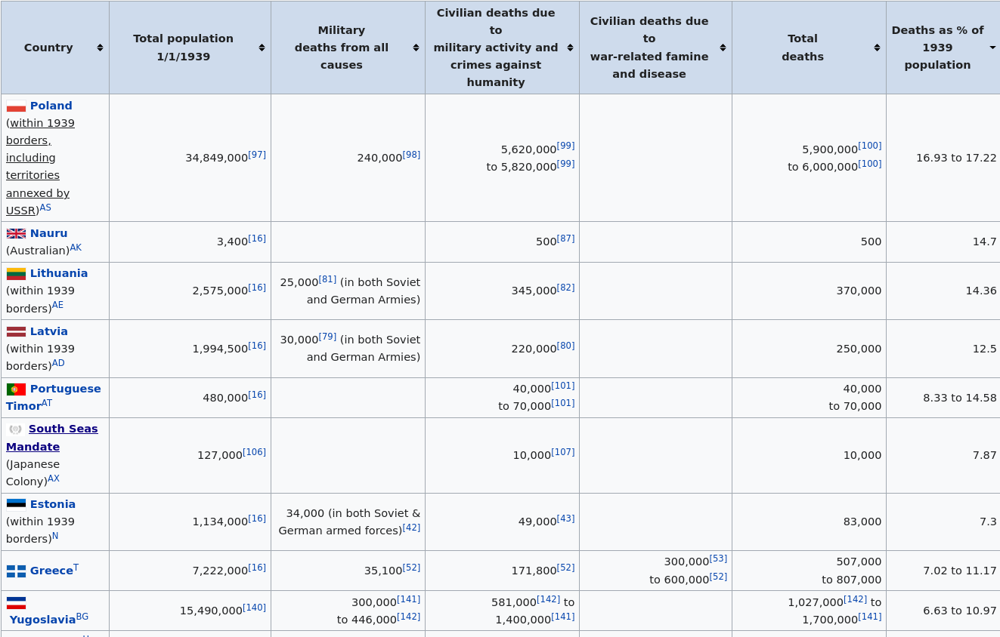

Test image is screenshot from World War II casualties article - table is sorted by deaths as % of population
test for https://github.com/linkchecker/linkchecker/issues/554

 
broken_links_inside

broken_links_inside